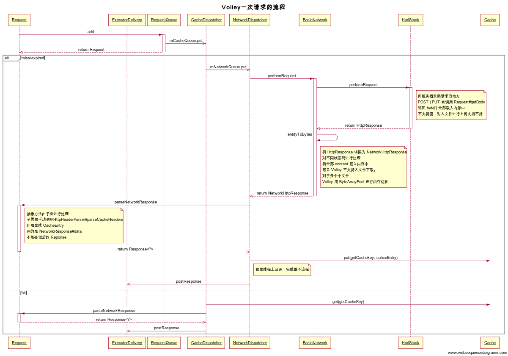

Volley
RequestQueue manage works thread
类似 AsyncHttpClient 接口
add（） 就调用接口，首先加载缓存没有接入 network dispatch threads pool
无论 add 在哪个线程调用，回调都在主线程
分开处理 onSuccess 和 onError
cancel
cancelAll 可传递 context 可以在 onStop 方法取消所有 request
也支持 tag 标记多个 request，通过 tag 取消
Volley 底层默认使用 com.android.volley.toolbox.BasicNetwork
BasicNetwork 根据不同系统，使用不同的HttpStack
if (Build.VERSION.SDK_INT >= 9) { stack = new HurlStack(); } else { // Prior to Gingerbread, HttpUrlConnection was unreliable. // See: http://android-developers.blogspot.com/2011/09/androids-http-clients.html stack = new HttpClientStack(AndroidHttpClient.newInstance(userAgent)); }
Singleton
如果只是做一次请求，可在 RequestQueue Start 后再调用 stop 将其废弃
推荐使用 singleTon 模式，传入 ApplicationContext
内置有一些常用的 Request
String Image JsonObject
ImageLoader 支持自定义 cache 和 合并（coalescing），暂不能理解合并
还有一个 NetworkImageView
post data
Volley 的 post params 得通过匿名类来实现
@Override protected Map<String, String> getParams() { Map<String, String> params = new HashMap<String, String>(); params.put(“name”, “Androidhive”); params.put(“email”, “abc@androidhive.info”); params.put(“password”, “password123”); return params; }
好处？只调用一次无须保持对 params 的引用，惰性求值？
这个方法是在 getBody 中调用。
Image
如果图片需要缩放，LruImage 是分两次请求，第一次获取 header，计算合适 inSampleSize 后，再请求整张图片，最后根据参数决定是否对图片缩放至指定大小。
ImageRequest， 是一次请求将图片载入内存（所以 ImageRequest 有个静态锁对象，保证同时只有一张完整数据图片在内存中），之后再计算 inSampleSize，可传入ImageView 的 size 和 ScaleType 进行计算，最后再缩放至实际大小。ImageRequest 的请求更少，内存占用大，没有并行处理能力。
ImageRequest 默认重试 3次。 IMAGE_MAX_RETRIES
LruImage 没有重试能力
实际的性能差异，可能需要做些测试。
Cache
ImageRequest 的 Cache 貌似有 bug，它没有重写 Request 的 getCacheKey 方法，
public String getCacheKey() {
return mMethod + ":" + mUrl;
}
所以是以 Http Method 和 url 来作为 key 的，而图片还有 size ，也就是说请求过的图片，第二次请求不同 size 也将会返回第一次的图片
Cache 是 cache 整张原始图片的 data。
MultiPart
无 multipart 支持
流程
Volley 一次请求的流程，见时序图：

缺陷
Volley 的缺点很明显，就是 getBody 是 Request 的方法，但 Request 更适合用于处理返回值的，不同的返回类型有不同的 Request 子类。倘若有不同的 post 类型，比如 form 或者 multipart 处理起来就略麻烦一些。
OkHttp 这方面的支持很好，我写了个新 Request 可以直接使用 Okhttp 的 RequestBody
okhttp
是基于 java.net.Socket 层面的 http lib
https://github.com/square/okhttp/blob/master/pom.xml#L79 的依赖较大
Request
you’re describing the request at a high-level: “fetch me this URL with these headers.”
Responses
如果用了 compression， OkHttp will drop the corresponding response headers Content-Encoding and Content-Length
Retring
OkHttp will retry the request with a different route if one is available.
Dispatch
Caching
Most applications should call new OkHttpClient() exactly once, configure it with their cache
Cancel
Timeouts
client = new OkHttpClient(); client.setConnectTimeout(10, TimeUnit.SECONDS); client.setWriteTimeout(10, TimeUnit.SECONDS); client.setReadTimeout(30, TimeUnit.SECONDS);
Interceptors